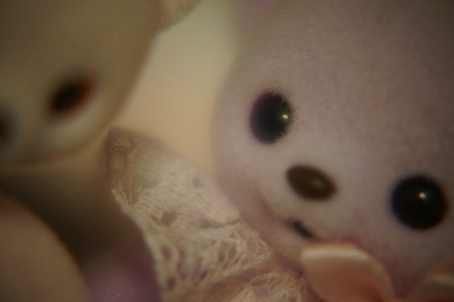
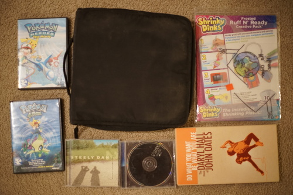

Happy birthday to my Migi boys!! Liam is 13 and Cheby is ???
I'm still undecided if Cheby's birthday is the 4th or the 26th, but I'm celebrating both his and Liam's birthdays the 26th and 27th this year. He's either 14 or 1. Much to think about...

When I took him home to my mom's house I thought about it! He lived in that house as a head for over 10 years, but had never been in the house as a full doll! Somehow he exists as both my newest doll and my third doll.

Do you think Hina would push Cheby off a cliff if given a chance with no one watching?
For those curious how my 200mm photo with the 4+ close up filter went, this photo is resized but not cropped.
Please enjoy this photo of the moon I took at 200mm. This photo was cropped but not resized. Very small moon.

Big accusation time: I think non-BJD doll collectors are attempting to destroy the ABJD hobby. Not that they care. They really don't and we shouldn't attempt to stop them. It is simply Not Possible or worth the tears and effort.
I saw an eBay listing for a Dollshe boy. The doll is clearly recast to a seasoned BJD lover (me), but the description says, "NOTE : this BJD is from my personal collection . I do not have the COA. I am not going to play the 'recast' game . If you purchase him you accept item as described in details as accurate ."
I've noticed a couple times that sellers do not say the item is a recast, but only that they do not have the CoA. This is dishonest and hopefully if you ask point blank, the seller will tell you the item is a recast. Unfortunately, I have messaged 2 sellers so far and both would not give me a clear answer when asked.
Funnily enough, the same seller has another body listed as "*Legit*" and has the following in the description: "NOTE : this BJD is a legitimate ( NOT A RECAST ) If you buy and try to say its recast to get a refund , I have dated photos of every part of this doll body to prove its legitimacy. Unfortunately Ebay has scammers that try this ploy and it will not be tolerated here." But, she's not playing the recast game.
This user's name is dollysg71, but it's not particularly important because there are multiple sellers using this tactic. You will often find they are selling other dolls which are not BJD, so I assume they are not part of the inner sanctum and have no interest in joining.
My point here is that you cannot think "no CoA" means the doll never came with a CoA or it was lost or that the seller is honest. There are plenty of dolls that never came with a CoA and are legit, but this is a great way to get out of admitting the doll is recast because many buyers will not ask. You can even give a wishy washy response and the buyer will not ask further!

As always....
Will I ever own enough of these?
do copics work on this
I've picked up this CD a few times and put it back, but today was the day I asked myself "why haven't I bought this one yet?"
Only disc 4 was inside, but there's a decent sized booklet which was the reason I bought it.